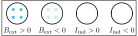
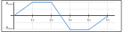
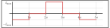
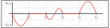
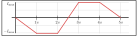
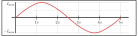
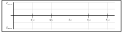
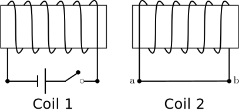

University Physics II

PHYS 232N: November 16, 2021
PQ-18 Question 1
A loop is being flushed with an external magnetic field that changes in time, Bext is given in the figure below. Which graph shows the correct induced current in the loop?
Sign convention and $B(t)$ 
(A)  (B)  (C)  (D) 
PQ-18 Question 1
PQ-18 Question 2
When the switch in coil 1 is closed, what direction does current flow in coil 2?
